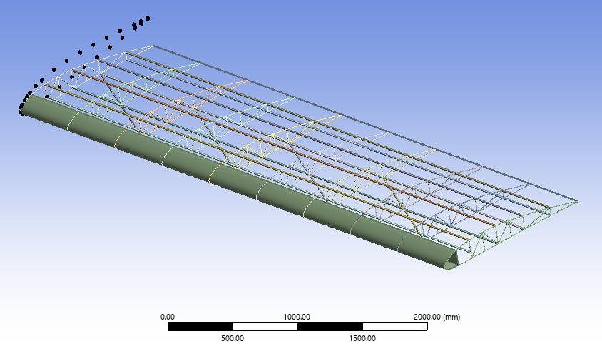
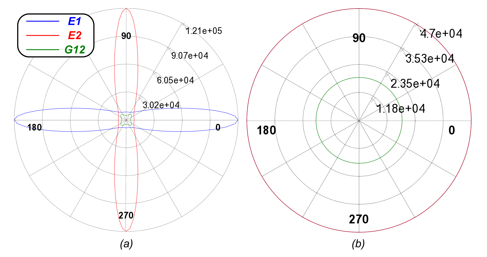
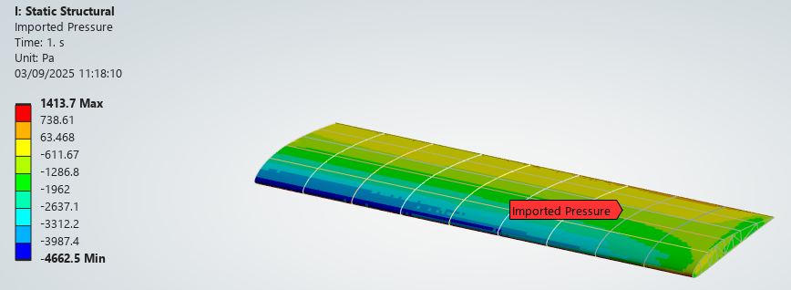
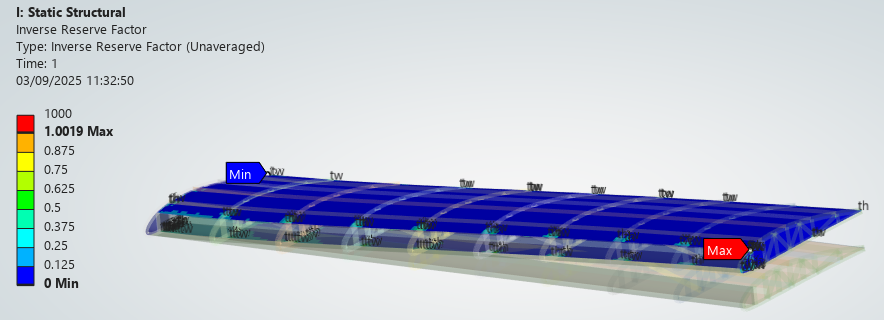
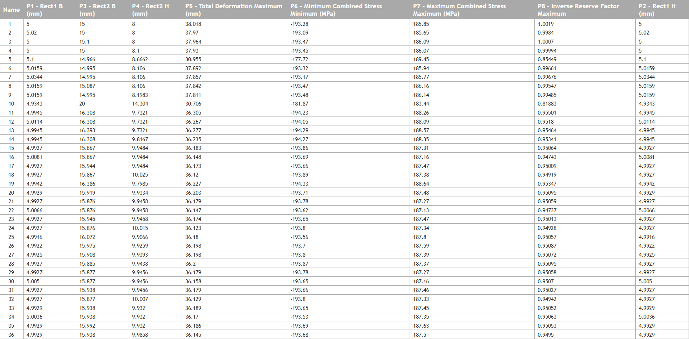

Finite Element Analysis of a Light Aircraft Wing
Executive Summary
- Objective: Comprehensive structural integrity assessment and dynamic characterization of a composite light-aircraft wing under aerodynamic loads.
- Tools & Methodology: ANSYS Workbench (Fluent, ACP, Mechanical) and Direct Optimization.
- Key Achievements: Mapping of 3D CFD pressure fields onto a structural shell/beam model, evaluation of composite failure criteria (Tsai-Wu/Tsai-Hill), and analysis of stress-stiffening effects on modal frequencies.
1. Computational Framework & Composite Setup
The structural model represents a light aircraft wing (USA35B airfoil) with a span of 10.82 m and a cruise velocity of 48 m/s. The architecture features internal spars, ribs, and stringers modeled as beam elements, with the skin represented by shell elements, as shown in Figure 1.

ANSYS ACP was used to define the anisotropic layup of the carbon fiber skin (symmetric sequence). The resulting polar properties are detailed in Figure 2.
- Layup Sequence: [(0/+45/-45/90)S]2
- Ply Thickness: 0.125 mm

2. FSI and Static Analysis
A one-way Fluid-Structure Interaction (FSI) approach was employed. Aerodynamic pressure fields obtained from Fluent (at 10° AoA) were mapped as boundary conditions on the mechanical solver (Figure 3). The resulting structural response was validated against Tsai-Wu and Tsai-Hill failure criteria to ensure integrity under limit load conditions, highlighting critical load-bearing regions as illustrated in Figure 4.


3. Parametric Optimization
A direct optimization loop was implemented to refine the spar cross-sections, aiming to maximize structural efficiency while maintaining safety margins on composite stress concentrations. The tradeoff results identifying the optimal configuration are represented in Figure 5.
| Configuration | Spar 1 Base [mm] | Spar 2 Base [mm] | Max Deformation [mm] | Max Combined Stress [MPa] |
|---|---|---|---|---|
| Initial | 5.00 | 15.00 | 38.01 | 185.85 |
| Optimized | 4.99 | 16.30 | 36.30 | 188.26 |

4. Dynamic Characterization
4.1 Pre-Stressed Modal Analysis
To capture realistic flight dynamics, a pre-stressed modal analysis was performed, accounting for the stiffening effect exerted by the aerodynamic lift. The following table compares the natural frequencies before and after the application of the flight load.
| Mode | Unstressed Pre-Optimization Frequency [Hz] | Unstressed Post-Optimization Frequency [Hz] | Pre-Stressed Post-Optimization Frequency [Hz] |
|---|---|---|---|
| 1 | 11.76 | 11.70 | 11.66 |
| 2 | 43.09 | 42.63 | 42.62 |
| 3 | 55.35 | 55.85 | 55.86 |
| 4 | 58.60 | 58.41 | 58.36 |
| 5 | 77.24 | 76.70 | 69.45 |
| 6 | 85.56 | 86.52 | 76.68 |
| 7 | 86.48 | 87.78 | 78.93 |
| 8 | 87.50 | 88.35 | 84.19 |
| 9 | 88.31 | 89.67 | 99.95 |
| 10 | 88.73 | 90.44 | 102.66 |
| 11 | 91.24 | 100.13 | 103.56 |
| 12 | 95.24 | 100.77 | 104.43 |
| 13 | 100.69 | 104.19 | 109.65 |
| 14 | 101.41 | 106.06 | 111.28 |
| 15 | 103.37 | 111.61 | 113.27 |
4.2 Harmonic Response Analysis
A full-method Harmonic Response analysis 10÷60 Hz was conducted to characterize the wing's dynamic behavior, assessing resonant peaks.